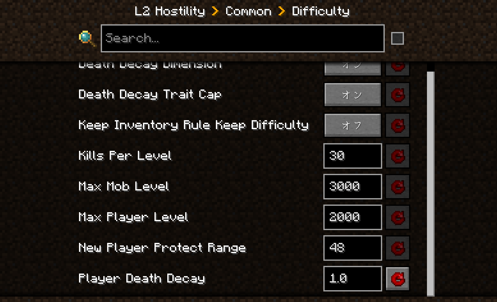
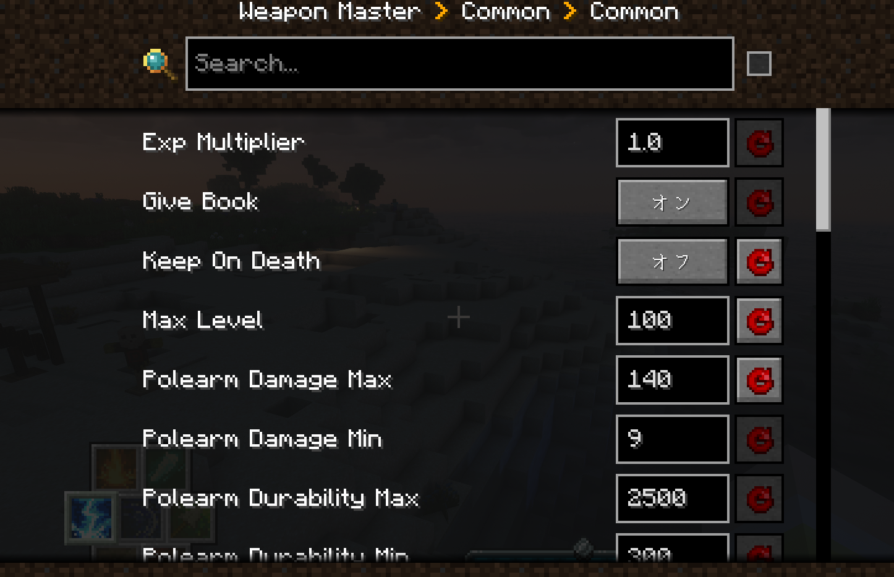
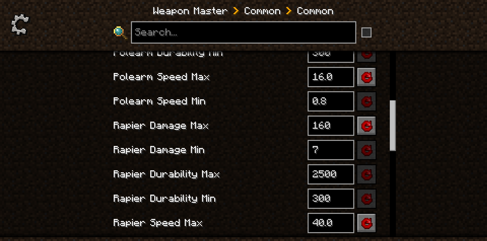
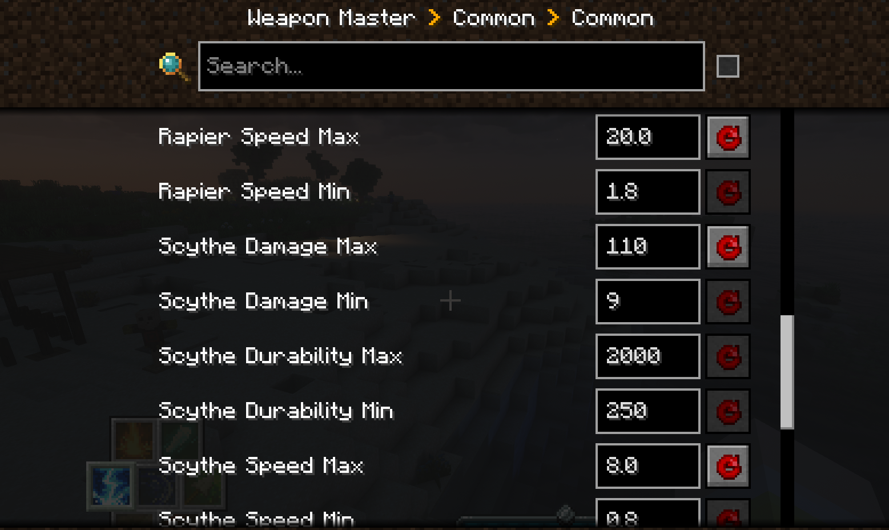
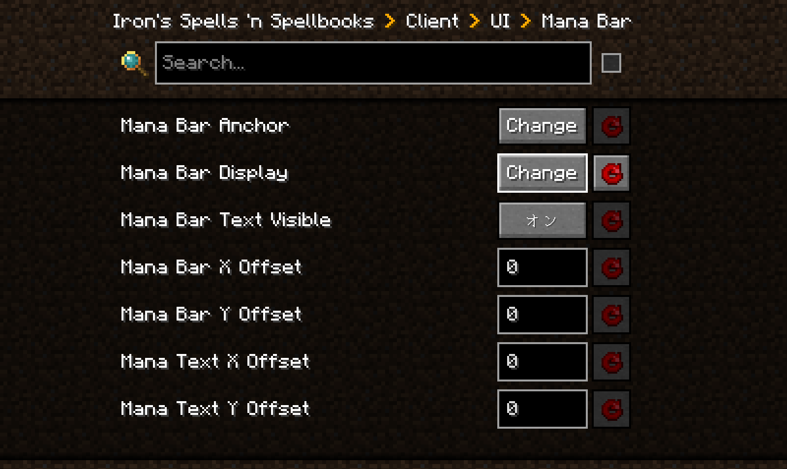

コンフィグ変更とは
マイクラにはmodごとに、コンフィグというmodのシステムを変更できるものがあります
Kenma データパックを適応するためにそれを変更してください
手順
- configured modをインストールしていることが前提です
まずマイクラのホーム画面を開き、MODのタブから指定するmodの欄をクリックし、設定タブを開きます
ワールド選択欄が出るなら変更したいワールドを選び、こちらが指定するところを変更してもらいます
赤い矢印のマークの色が明るくなっているところを、写真の通りに変えてください
configを変更するmod
- L2artifacts
敵が聖遺物を落とす条件がレベル依存から体力依存になり、聖遺物をゲットしやすくなります
- L2hostility
死亡時に危険度に倍率がかかるのを調整します、元が0.8で今の危険度が0.8倍になります
おすすめは1.0で死んでも危険度が変わりません、詰みが怖いなら0.8のままか0.9がおすすめです
- weapon master
死亡時にほかのアイテムと同じように墓に保管されます
武器の最大レベルとそれに伴う4種の武器の攻撃力、攻撃速度を上げます
レイピア、ショートソード、鎌、斧槍の４つをそれぞれ設定してください


- Iron's Spells 'n Spellbooks
Mana Bar Displayの部分をAlwaysにすると、常にマナバーが表示されます、ほかにもバーの位置などをUI部分から変更できます